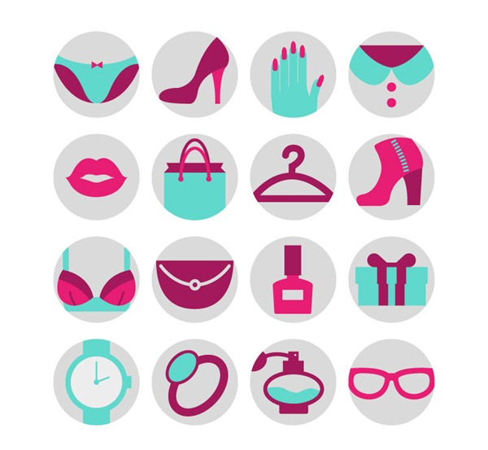

| Inicio | Tendencia | Pasarela | Galería |
|---|---|---|---|
La moda se trata de un conjunto de prendas de vestir, adornos y complementos que se basan en gustos, usos y costumbres, y que se usan durante un periodo determinado. La moda y el vestir guardan una compleja relación con la identidad: por una parte la ropa que elegimos llevar puede ser una forma de expresar nuestra identidad, de decir a los demás algo sobre nuestro género, clase, posición, etc. |
|
La primera en llevarlo. El juego de las predicciones es uno de nuestros placeres favoritos: ninguna emoción de moda se vive tan intensamente como el inicio de una temporada o, mejor aún, el cambio de año. En nuestros propósitos de 2018 están pensar como Miuccia Prada y vestir como Giorgia Tordini. | |
|  |
El mes de febrero ha comenzado con las calles de copenhague convertidas en auténticas pasarelas de moda. Porque a diferencia de lo que se pueda pensar, y aunque el tiempo no siempre acompañe, los colores vivos lo inundan todo. Junto a ellos ay otras particularidades notables: que las influemcers que pasean por alli estan seducidas por las marcas de lujo(normal). Y cuanto mas visibles estén mucho mejor. |
|
|
|
CLASES VIRTUALES |